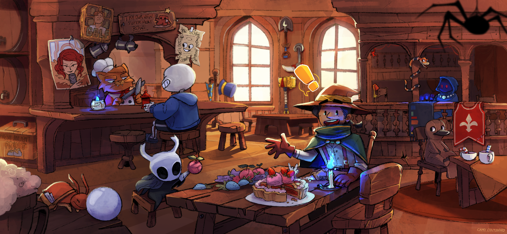

SOBRE NÓS
Esse espaço foi criado com uma única intenção: APRESENTAR E INDICAR jogos indies incríveis que acabam passando despercebidos
por milhares de pessoas e não recebem a devida atenção que eles merecem.
Os indie games, para quem ainda não conhece, são jogos desenvolvidos por estúdios pequenos, ou as vezes até por uma só pessoa,
e que muitas vezes não contam com o apoio de investimento de uma grande marca por trás, o que faz com que seus méritos se
tornem ainda mais incríveis quando jogamos o produto final.

E cada vez mais a indústria de games lança títulos memoráveis, com uma frequência que faz ser muito difícil, ou até impossível,
ficar por dentro de todas as novidades. Com isso, algumas experiências épicas do mundo dos indie games acabam passando
batido por não serem devidamente divulgadas ou ficarem ofuscadas por grandes lançamentos.
Portanto, aqui no Quest Giver você vai receber dicas e indicações de jogos independentes que acreditamos que valem muito a pena
experimentar, seja por uma mecânica divertida, uma direção de arte diferenciada ou uma história cativante (e as vezes tudo
isso junto).
E aí, você está pronto para sua próxima aventura?